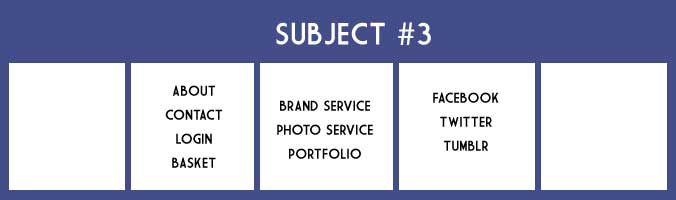

Personal Site Card Sorting


At the beginning of this lab, I knew I wanted to do something different than a typical "About Me" website. As I got to thinking, I realized that one day I might be a free lance photographer or designer, so it would be important to have a good website to advertise my services to my customers. I searched local photographers and designers for the types of links and content they had on their website and complied a set of things that I would like to have on my own. I wanted my website to be more simple compared to complex, so I kept the links to content pretty low. I like simpliciy and organization, so this style fits my personality.
Becase of the small number of links to content that my personal site would have, there was not much variation in the different groups of cards that I had my subjects sort. Each subject divided the content into 3 groups, one being the customer links like login and shopping basket, another group being a navigation bar of my portfolio and contact information, and the third being ways to contact me or follow my journey, such as Twitter, Facebook, and Tumblr. My sorting was almost identical to the other subject's because of the small number of links. The card sorting exercise gave me a good idea of what should go where. I even got a subject to tell me how they would see the website set up.